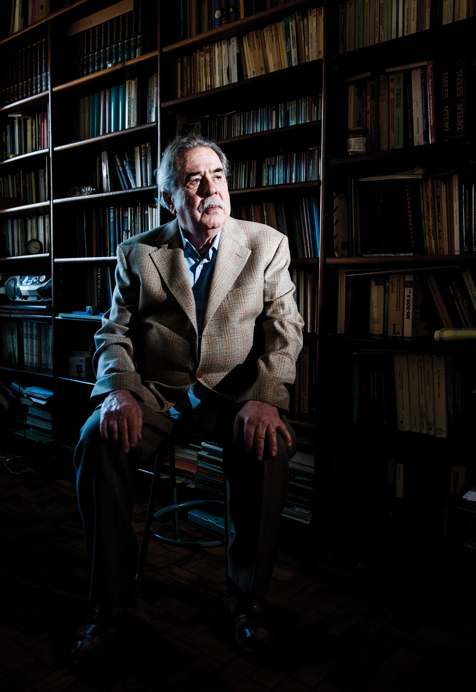

A tribute to Professor Sylvio Ferraz-Mello

The XXIII Brazilian Colloquium of Orbital Dynamics is dedicated to Professor Sylvio Ferraz-Mello, who turns 90 this year.
Few people have shaped the field of celestial mechanics as deeply and as durably as he has. After graduating in Physics from the Universidade de São Paulo, Sylvio earned his Doctorate in Mathematical Sciences from the Académie de Paris - Sorbonne. He spent most of his career at the Institute of Astronomy, Geophisycs and Atmospheric Sciences of the University of São Paulo, where he is now Professor Emeritus. He is also a Full Member of the Brazilian Academy of Sciences and the Latin American Academy of Sciences, and a Corresponding Member of the Royal Academy of Sciences of Zaragoza.
His research touched — and often transformed — several areas of dynamical astronomy: orbital resonances, tidal evolution, chaos, asteroid dynamics, and exoplanetary systems. In particular, his Creep Tide theory offered a fresh rheophysical perspective on tidal dissipation and has become a standard reference in studies of the rotational and orbital evolution of planetary bodies.
He led the journal Celestial Mechanics and Dynamical Astronomy as Editor-in-Chief, and served as President of the IAU Commission 7 for Celestial Mechanics.
Among other honors, he received the Grã-Cruz da Ordem Nacional do Mérito Científico, the Docteur Honoris Causa from the Observatoire de Paris, and the Brouwer Award of the AAS Division on Dynamical Astronomy. The asteroid 5201 bears his name.
Yet equally important, he invested heavily in building the dynamical astronomy community in South America. Many of us in this field are, directly or indirectly, his scientific descendants.
Sylvio was one of the founders of the CBDO, early in 1982. We dedicate this edition of the Colloquium to him with admiration and gratitude.